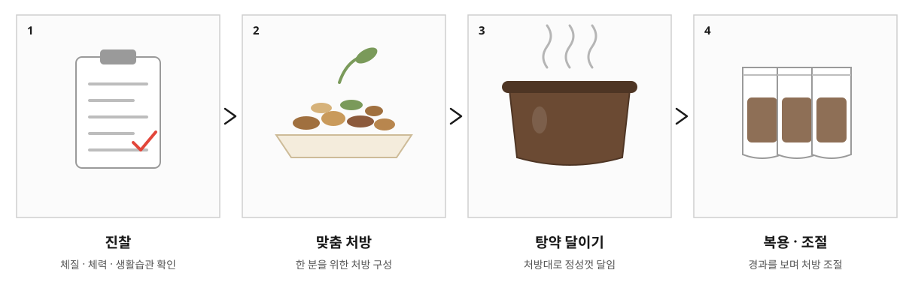
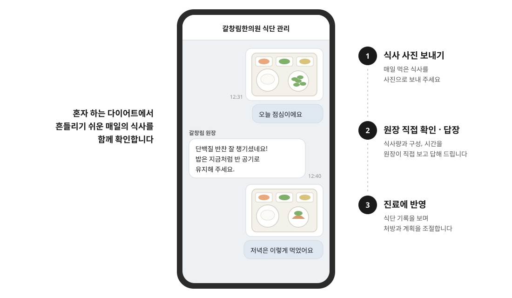
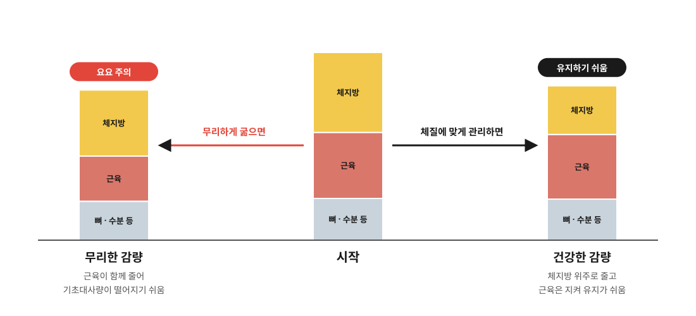

01
식욕 조절
과하게 올라간 식욕과 야식·폭식 습관을 다스려 무리 없이 식사량을 줄일 수 있도록 돕습니다.
DIET
똑같이 먹고 똑같이 운동해도 어떤 분은 비교적 빠르게 체중이 줄고, 어떤 분은 기운이 떨어지거나 요요를 반복합니다. 지금의 체력과 생활 습관, 수면과 스트레스, 몸의 건강 상태가 사람마다 다르기 때문입니다.
갈창림한의원의 한약 다이어트는 식욕을 강하게 억누르기만 하는 방식이 아닙니다. 몸의 균형을 되찾으면서 체지방을 줄이고, 감량한 체중을 오래 유지하는 것을 목표로 합니다.
POINT 1 · 맞춤 탕약
미리 만들어 둔 같은 약을 모두에게 드리지 않습니다. 진찰로 체질과 체력, 식습관과 생활 패턴, 부종과 전신 건강 상태를 살핀 뒤, 그 결과에 맞춰 한 분 한 분의 처방을 구성하고 탕약으로 달여 드립니다.
감량하는 동안에도 체중 변화와 컨디션, 식욕과 부종을 확인하며 처방을 조절합니다. 같은 사람이라도 몸이 달라지면 처방도 함께 달라집니다.

POINT 2 · 카카오톡 식단 관리
다이어트가 흔들리는 순간은 진료실이 아니라 매일의 식탁에서 찾아옵니다. 하루 동안 드신 식사를 사진으로 카카오톡에 보내 주시면, 처방한 원장이 직접 식사량과 구성, 먹는 시간을 확인하고 답장해 드립니다.
한 달에 몇 번 내원할 때만 확인하는 것이 아니라 매일 함께 점검하기 때문에, 작은 습관을 바로잡고 감량 흐름을 꾸준히 이어갈 수 있습니다.

PRINCIPLE
체중 숫자만 줄이는 것이 아니라, 살이 쉽게 찌는 몸의 상태를 함께 바꿔 가는 것이 핵심입니다.
01
과하게 올라간 식욕과 야식·폭식 습관을 다스려 무리 없이 식사량을 줄일 수 있도록 돕습니다.
02
굶어서 근육까지 빠지지 않도록, 몸이 쓰는 기본 에너지를 지키며 감량합니다.
03
몸에 고인 수분의 흐름을 도와, 붓기 때문에 무겁고 둔해 보이는 상태를 함께 관리합니다.
04
체지방이 쉽게 쌓이는 식사 시간, 수면, 활동 습관을 함께 바로잡아 감량 후에도 유지할 수 있게 합니다.
DIRECTION
짧은 기간에 체중을 많이 줄여도 근육과 기초대사량이 함께 줄었다면 요요가 오기 쉽습니다. 얼마나 빨리 빼느냐보다 얼마나 건강하게 유지하느냐가 중요합니다.

FLOW
CAUTION
※ 감량 속도와 결과는 체질, 생활 습관, 건강 상태에 따라 개인차가 있습니다.
FAQ
식욕만 강하게 억누르는 방식이 아니라, 과하게 올라간 식욕을 조절하고 기초대사량을 지키며, 부종과 생활 습관을 함께 관리해 체지방이 줄어드는 몸의 상태를 만들어 가는 방식입니다.
진찰로 체력과 건강 상태를 확인한 뒤 그에 맞춰 처방하고, 복용하는 동안 컨디션을 살피며 조절합니다. 불편한 점이 느껴지면 바로 알려 주세요.
갈창림한의원은 진찰 결과에 따라 한 분 한 분 처방을 다르게 구성하기 때문에, 그 처방대로 바로 달여 드릴 수 있는 탕약을 기본으로 합니다. 감량 중 몸이 달라지면 처방도 그에 맞춰 바꿉니다.
다이어트를 시작하시면 카카오톡으로 연결해 드립니다. 매일 드신 식사를 사진으로 보내 주시면 원장이 직접 식사량과 구성, 시간을 확인하고 답장해 드립니다.
아닙니다. 무리하게 굶으면 근육이 줄고 폭식으로 이어지기 쉽습니다. 세 끼를 챙기되 양과 구성을 조절하는 방향으로 식단을 함께 맞춰 갑니다.
다이어트를 마친 뒤에는 요요 방지 한약을 처방해, 줄였던 식사량을 조금씩 늘려 가는 동안에도 체중이 다시 오르지 않도록 관리합니다. 감량 중에도 근육량과 기초대사량을 지키며 빼기 때문에 유지가 한결 수월하고, 유지에 필요한 식사와 생활 습관도 함께 안내해 드립니다.